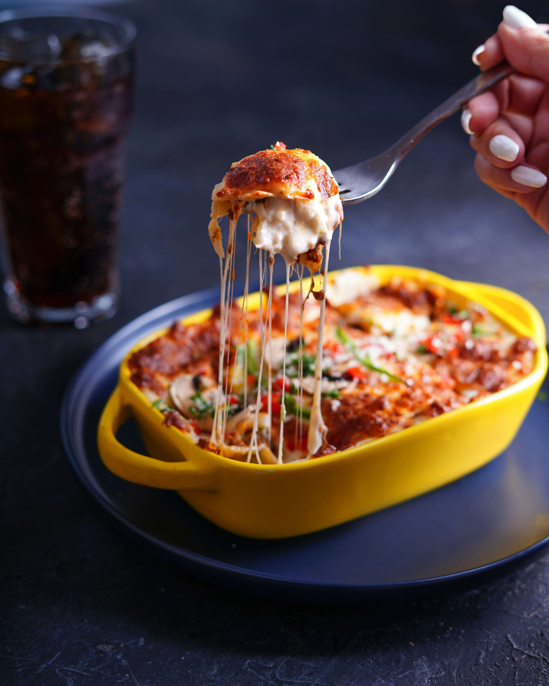

Lasagna

Description
Lasagna is a classic Italian pasta dish consisting of layers of pasta sheets, rich meat or vegetable sauce, creamy béchamel, and cheese. It's a comforting, hearty meal perfect for special occasions or family dinners.
Ingredients
- Meat Sauce (or Vegetable Sauce):
- 500g minced meat (or vegetables like zucchini, spinach)
- 1 onion (chopped)
- 4 cloves garlic (minced)
- 400g tomato sauce
- 2 tomatoes (chopped)
- Salt and pepper (to taste)
- 2 tbsp olive oil
- 1 tsp dried oregano
- 1 tsp dried basil
- Béchamel Sauce:
- 4 tbsp butter
- 4 tbsp all-purpose flour
- 3 cups milk
- Salt and pepper (to taste)
- Nutmeg (optional)
- 12 lasagna sheets (boiled)
- 1 cup ricotta cheese
- 2 cups mozzarella cheese (shredded)
- 1/2 cup Parmesan cheese (grated)
Steps
- Prepare meat sauce by sautéing onion, garlic, and minced meat in olive oil. Add tomatoes, tomato sauce, oregano, basil, salt, and pepper. Simmer for 20 minutes.
- For béchamel sauce, melt butter in a pan, add flour, and cook for 1 minute. Gradually add milk, stirring continuously until thickened. Season with salt, pepper, and nutmeg.
- In a baking dish, layer béchamel sauce, lasagna sheets, meat sauce, ricotta, mozzarella, and Parmesan. Repeat layers and finish with cheese.
- Bake at 180°C for 30-40 minutes until golden and bubbling. Let it cool slightly before serving.
Home